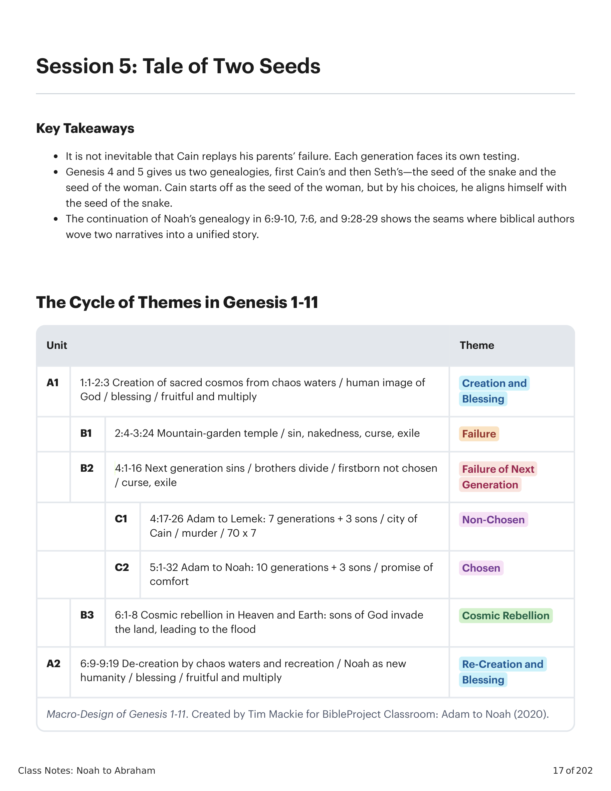
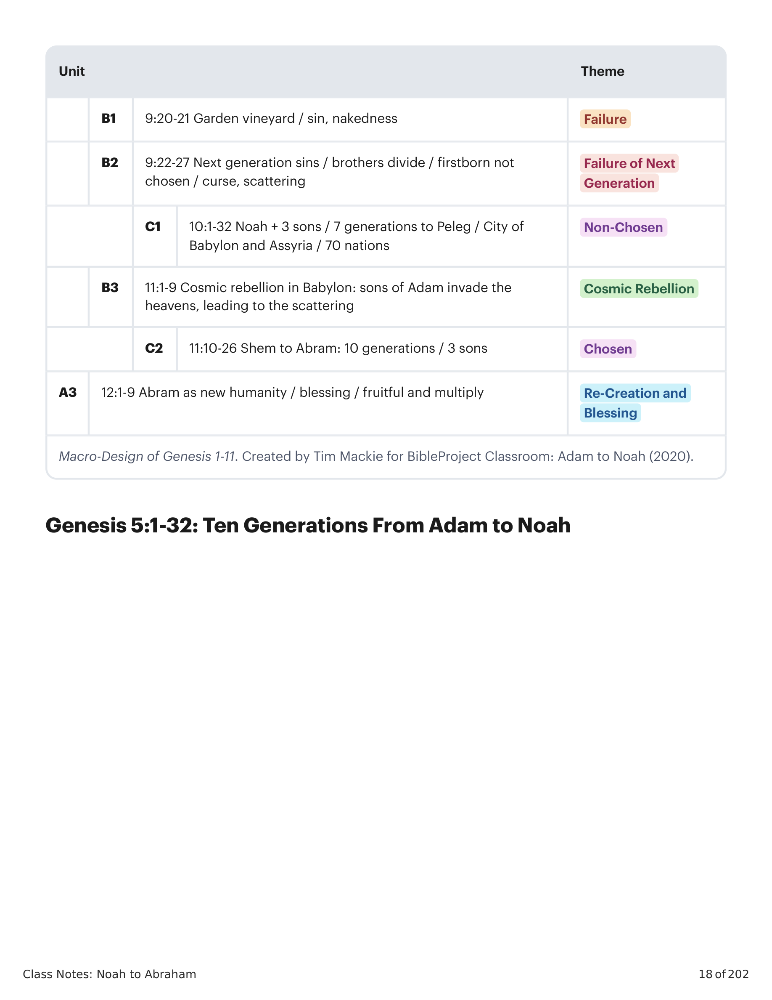
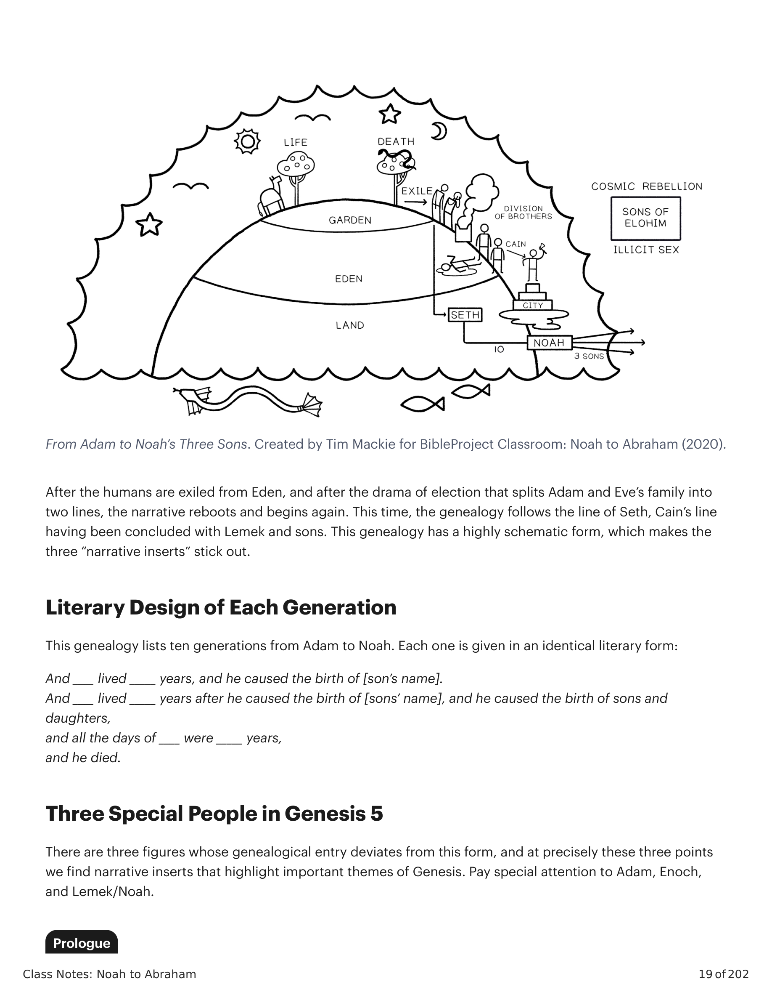
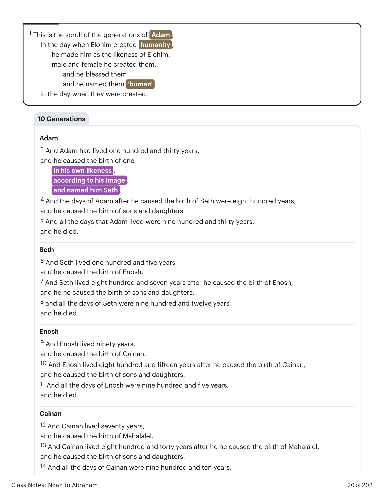

Sessão 5: História de Duas SementesSession 5: Tale of Two Seeds
Principais LiçõesKey Takeaways
Não é inevitável que Caim reproduza o fracasso de seus pais. Cada geração enfrenta sua própria prova.It is not inevitable that Cain replays his parents’ failure. Each generation faces its own testing.
Gênesis 4 e 5 nos dá duas genealogias, primeiro a de Caim e depois a de Sete — a semente da serpente e a semente da mulher. Caim começa como a semente da mulher, mas por suas escolhas, ele se alinha com a semente da serpente.Genesis 4 and 5 gives us two genealogies, first Cain’s and then Seth’s—the seed of the snake and the seed of the woman. Cain starts off as the seed of the woman, but by his choices, he aligns himself with the seed of the snake.
A continuação da genealogia de Noé em 6:9-10, 7:6 e 9:28-29 mostra as costuras onde os autores bíblicos teceram duas narrativas em uma história unificada.The continuation of Noah’s genealogy in 6:9-10, 7:6, and 9:28-29 shows the seams where biblical authors wove two narratives into a unified story.
O Ciclo de Temas em Gênesis 1-11The Cycle of Themes in Genesis 1-11
A história de Noé em Gênesis 6-11 se encaixa dentro de um padrão maior em ação em Gênesis 1-11. Os capítulos 1-5 representam um ciclo de temas, e os capítulos 6-11 reproduzem e desenvolvem o ciclo.The Noah story in Genesis 6-11 fits within a larger pattern at work in Genesis 1-11. Chapters 1-5 play out a cycle of themes, and chapters 6-11 replay and develop the cycle.

Macrodesign de Gênesis 1-11. Por Tim Mackie para BibleProject Classroom: Adam to Noah (2020).Macro-Design of Genesis 1-11. Created by Tim Mackie for BibleProject Classroom: Adam to Noah (2020).

Macrodesign de Gênesis 1-11 (continuação). Por Tim Mackie para BibleProject Classroom: Adam to Noah (2020).Macro-Design of Genesis 1-11 (continued). Created by Tim Mackie for BibleProject Classroom: Adam to Noah (2020).
Gênesis 5:1-32: Dez Gerações de Adão a NoéGenesis 5:1-32: Ten Generations From Adam to Noah
Depois que os humanos são exilados do Éden, e após o drama da eleição que divide a família de Adão e Eva em duas linhas, a narrativa reinicia e começa de novo. Desta vez, a genealogia segue a linha de Sete, a linha de Caim tendo sido concluída com Lemek e seus filhos. Esta genealogia tem uma forma altamente esquemática, que faz com que as três “inserções narrativas” se destaquem.After the humans are exiled from Eden, and after the drama of election that splits Adam and Eve’s family into two lines, the narrative reboots and begins again. This time, the genealogy follows the line of Seth, Cain’s line having been concluded with Lemek and sons. This genealogy has a highly schematic form, which makes the three “narrative inserts” stick out.

De Adão aos Três Filhos de Noé. Criado por Tim Mackie para BibleProject Classroom: De Noé a Abraão (2020).From Adam to Noah’s Three Sons. Created by Tim Mackie for BibleProject Classroom: Noah to Abraham (2020).
Design Literário de Cada GeraçãoLiterary Design of Each Generation
Esta genealogia lista dez gerações de Adão a Noé. Cada uma é apresentada em uma forma literária idêntica:This genealogy lists ten generations from Adam to Noah. Each one is given in an identical literary form:
E ____ viveu _____ anos, e ele causou o nascimento de [nome do filho]. E ____ viveu _____ anos depois de causar o nascimento de [nome do filho], e ele causou o nascimento de filhos e filhas, e todos os dias de ____ foram _____ anos, e ele morreu.And ____ lived _____ years, and he caused the birth of [son’s name]. And ____ lived _____ years after he caused the birth of [son’s name], and he caused the birth of sons and daughters, and all the days of ____ were _____ years, and he died.
Três Pessoas Especiais em Gênesis 5Three Special People in Genesis 5
Há três figuras cuja entrada genealógica se desvia dessa forma, e é precisamente nesses três pontos que encontramos inserções narrativas que destacam temas importantes de Gênesis. Preste atenção especial a Adão, Enoque e Lemek/Noé.There are three figures whose genealogical entry deviates from this form, and at precisely these three points we find narrative inserts that highlight important themes of Genesis. Pay special attention to Adam, Enoch, and Lemek/Noah.
ProloguePrologue
1 Este é o livro das gerações de Adão . No dia em que Elohim criou a humanidade, à semelhança de Elohim ele o fez. 2 Macho e fêmea ele os criou, e os abençoou, e os chamou pelo nome de 'humanos' no dia em que foram criados.1 This is the scroll of the generations of Adam ; In the day when Elohim created humanity , he made him as the likeness of Elohim, 2 male and female he created them, and he blessed them, and he called their name 'human' in the day when they were created.

Dez Gerações de Adão a Noé. Criado por Tim Mackie para BibleProject Classroom: De Noé a Abraão (2020).Ten Generations Adam to Noah. Created by Tim Mackie for BibleProject Classroom: Noah to Abraham (2020).
Pergunta de ReflexãoReflection Question
O que você acha do padrão cíclico de temas em Gênesis 1-11?What do you make of the cyclical pattern of themes in Genesis 1-11?